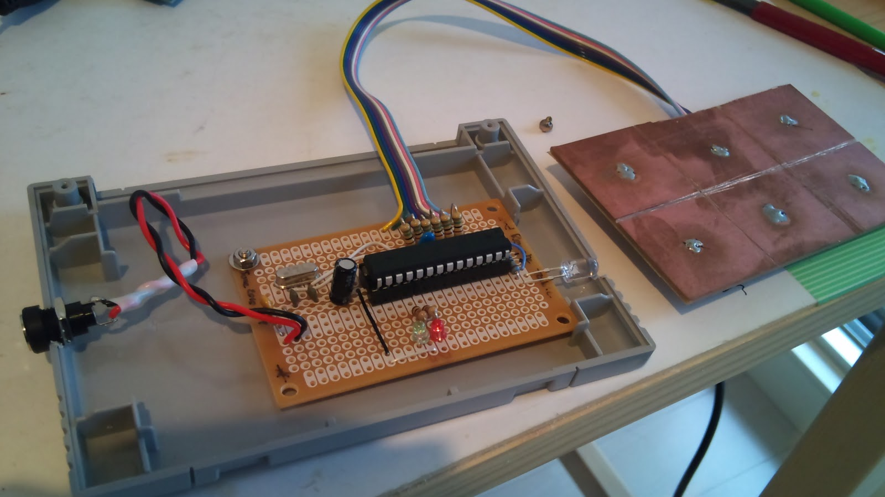
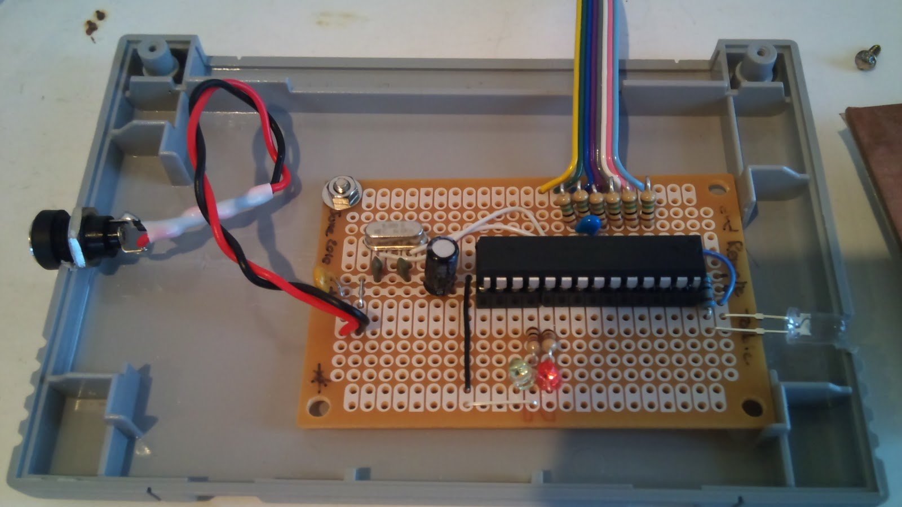
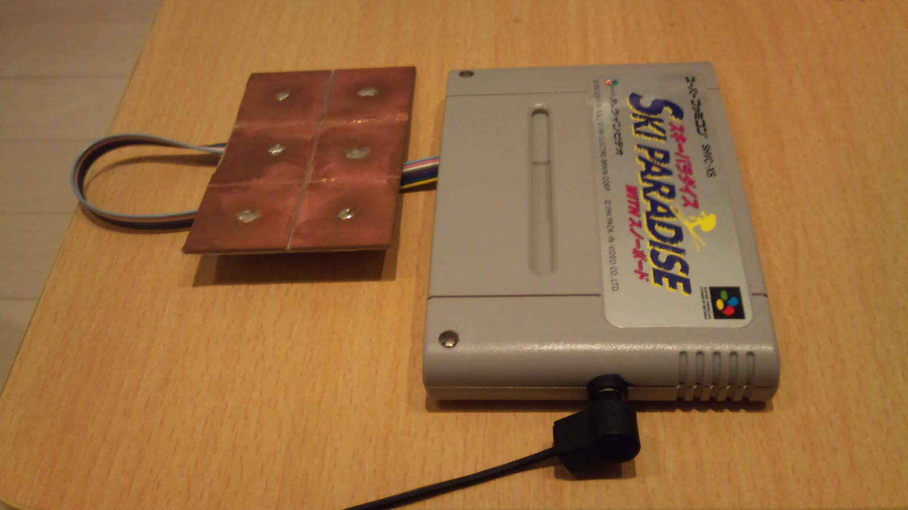

Why why why oh why ?
Embed in the table next to my sofa a few touch zone (using capacitive sensing) to control basic functions of the TV and no more search for that very big remote. You basically need volume %20/-, channel %20/- and power. So in order to full fill that project, we need the following basics :
Reviewed objectives
Well, the wood work stuff was not possible due to bad sensitivity of my sensors. Direct touch work fine, through-wood wouldnt.
For the casing, a old SNES cartridge : 100 JPY, sufficient size, very easy to workout maleable plastic.
Bad surprise, distance of the IR is not sufficient for reaching tv from the furniture. Not much, like missing 40cm maybe but still out of reach :( Otherwise working just fine. Maybe I'll hook it somewhere else and put long wires to the IR emitter.
In fact after some checkings, it's weirder then first thought: it works perfectly fine from the distance I initially planned. Problem is that it can't startup the TV
the first time or after a long inactivity time. If you start the TV with the usual remote, it works fine then and after and you can full control the TV, even start/stop it at will. But "cold start" seems not to work... weird, and no idea why... Oo;
Images


The naked truth. It has also 2 led for the debug purpose (I bought a 100 pack for 5 euro so lets us it)

Cased in a old SNES cartridge (100 jpy somewhere in Akihabara or Higashi-Nakano)
Material
Codes
ArdRemoteTable.pde The sketch for Arduino IDE
setfuses.Pololu.sh Set the fuses for 16MHz external quartz
uploadArdRemoteTable.Pololu.sh Upload the IDE compiled .hex file to the board
IRrecord.pde Use this script to record IR info. You need the IRremote library and change it to have a longer buffer (#define RAWBUF 256)
Links